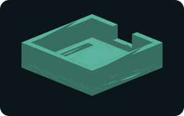
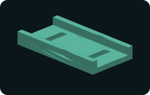
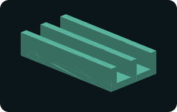
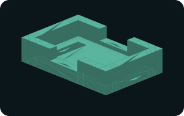
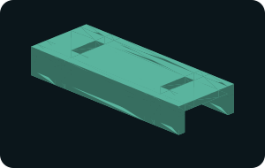
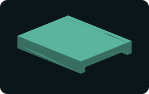

Download six original FPV and inspection-drone accessory studies. Start with an STL for slicing, or edit the OpenSCAD source for your measured module, arm or strap. Each page includes dimensions, retention notes and a suggested print orientation.
Which drone parts can I 3D print?
Accessory trays, cable guides and covers are useful starting points for a printer. This collection provides nominal geometry for GPS modules, receiver boards, capacitors, antenna cables, arm wiring and battery webbing. These are original generic studies, not manufacturer replacement files or flight-qualified hardware.
The STL meshes were checked for closed edges, connected surfaces, positive volume and non-degenerate triangles. They have not been physically printed or flight-tested. Import in millimetres, check the slicer preview, and measure your hardware before use.

29.4 × 29.4 × 9 mm · pocket 25.4 × 25.4 mm · 8 mm cable exit
Base on the bed, pocket upward. A 0.2 mm layer and 0.4 mm nozzle are starting points; inspect tie-slot bridging. Try a fit coupon before a full print. PETG is a candidate for rigid fit trials; use the filament supplier profile.

34 × 18 × 5 mm · 14 mm open channel · two 2.5 × 10 mm tie slots
Flat base on the bed, rails upward. TPU is a candidate for flexible retention trials, using the supplier TPU profile. Start with a 0.2 mm layer and verify all tie passages after slicing.

32 × 16 × 7 mm · two 5 mm open channels · two tie slots
Base on the bed, channels upward. TPU is a candidate for compliant cable support. Start with 0.2 mm layers and confirm cable bend radius and connector access before installing.

24.4 × 16.4 × 6 mm · pocket 20.4 × 12.4 mm · two cable exits
Floor on the bed, opening upward. PETG or TPU may be evaluated for fit trials. Start at 0.2 mm layers; inspect the narrow floor webs and leave room for solder joints.

48 × 18 × 8 mm · tunnel 14 × 6 mm · two roof tie slots
Flip the model 180 degrees in the slicer so its outside roof lies on the bed and the open tunnel faces upward. TPU may be evaluated for a compliant cover. Start at 0.2 mm layers; remove strings from the tie slots.

30 × 24 × 5 mm · open passage 20 × 2 mm
Flip 180 degrees in the slicer, exterior roof on the bed. TPU is a candidate for a soft guide. Start at 0.2 mm layers; inspect edges and prevent strap abrasion.
Choose the first part to print
| Your need | Starting model | Measure first |
|---|
| Hold a square GPS module | 25 mm GPS tray | Module outline, connectors, sky clearance |
| Route a pair of antenna cables | Dual cable guide | Sleeve diameter, bend radius, antenna active area |
| Support a capacitor with soft ties | Capacitor strap cradle | Body diameter, terminal and pressure-vent access |
| Hold a compact receiver board | 20 × 12 mm receiver tray | Board, components, solder joints and insulation |
| Cover an arm wire bundle | 14 mm wire-cover tunnel | Arm and wires together, propeller envelope |
| Route webbing | 20 mm strap bridge | Actual strap width, seams and thickness |
How do I customize a drone STL?
For this collection, edit the named dimensions in the matching OpenSCAD file, render it, and export a new STL. Several mounting offsets are also explicit expressions in the source; review the entire geometry when changing dimensions. STL alone is a triangle mesh and does not preserve editable design parameters.
Should I use TPU, PETG or PLA?
TPU is a candidate for compliant cable guides and soft retention accessories; PETG can be evaluated for rigid tray fit trials. PLA can be used for a bench dimension check, but material choice for an installed part depends on heat, UV, creep, vibration, geometry and printing quality. Use the filament supplier profile rather than treating one temperature or infill setting as universal. The Prusa flexible-material guide explains TPU printing considerations.
Do these parts fit my drone?
Match the published dimensions to your measured hardware. A module name or nominal board size does not establish component, connector or frame compatibility. Make a small fit coupon first, then check retention and clearances with power disconnected.
Are these files free for commercial use?
Yes. The original geometry is released under CC0 1.0. No third-party STL or supplier drawing was copied. The release supplies geometry without warranty or certification.
Application references
ArduPilot GPS/compass mounting describes sky view and separation from magnetic interference. ExpressLRS hardware guidance discusses antenna choices and carbon obstruction. These sources explain installation context; they do not validate our model dimensions.
All mesh and source generation uses local CPU geometry. The website has no model-generation API, AI inference or GPU requirement.